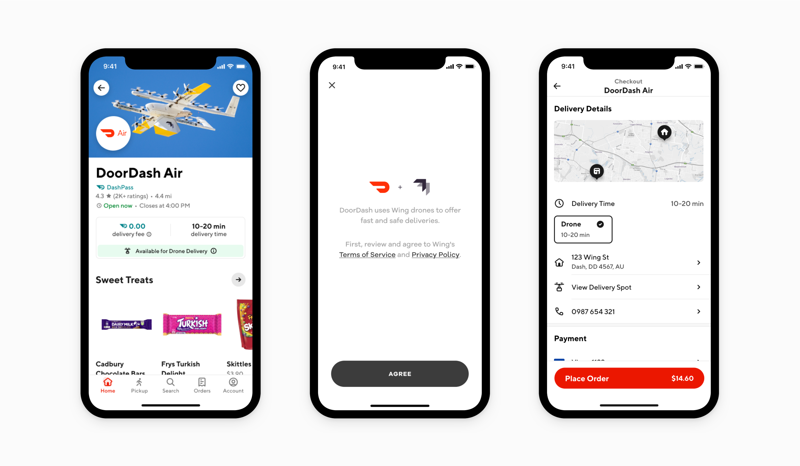
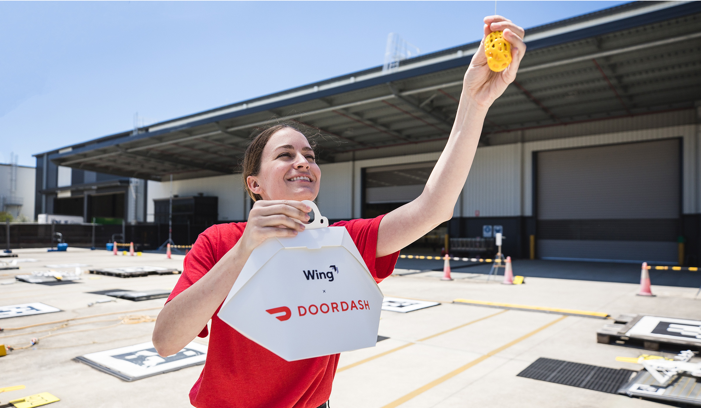
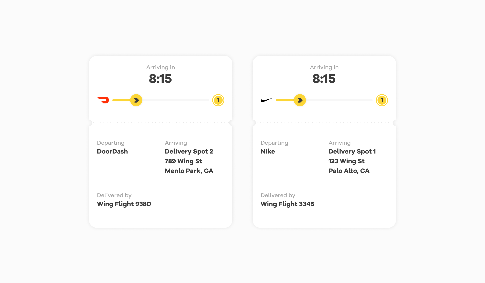
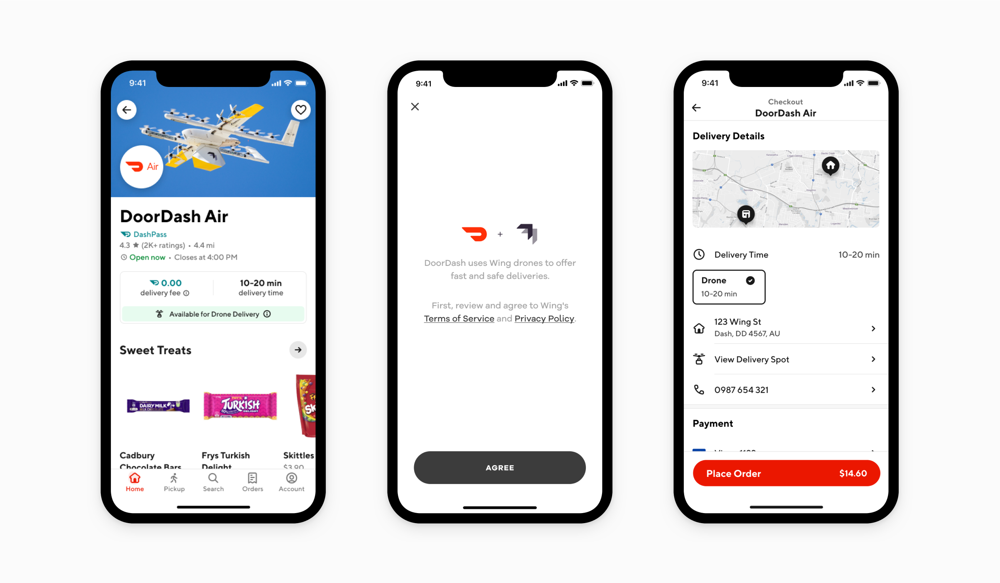
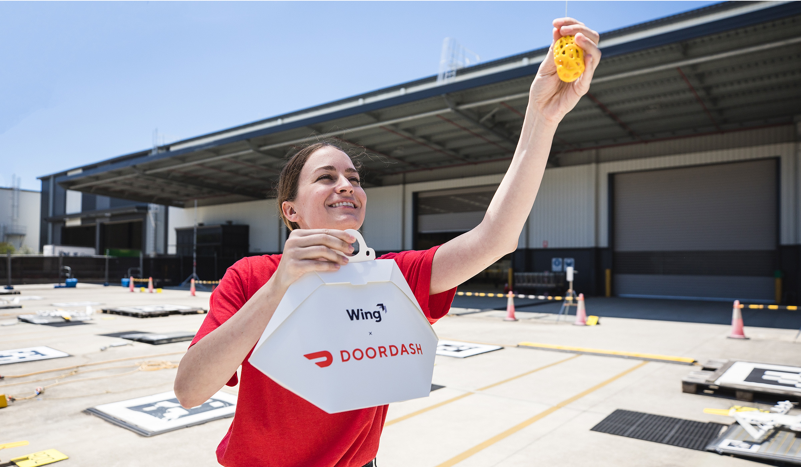
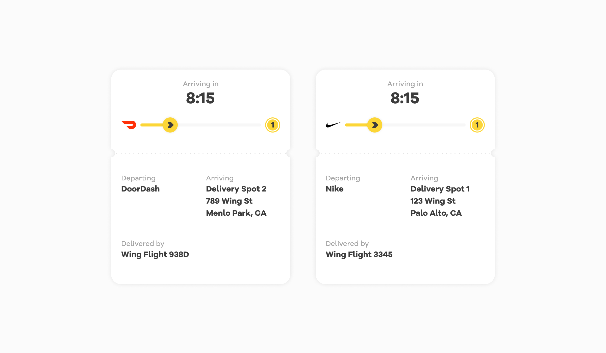

I helped solve business problems and improve operational efficiency through several enterprise tools and initiatives, including:
• Web design system for commerces products based on angular material 2
• Loader App to facilitate ground ops to load packages to drones
• Drone Network Interface to enable internal users visualize the drone network
• Partner portal to enable partners to monitor and troubleshoot orders
• Web UI Kit to allow partners to integrate drone delivery to their services
As a lead product designer, I created the first web commerce design system based on angular material 2, establishing consistency across commerce products with minimal dev time. I worked with 4 front end ENG on color, type, input, navigation, table, and many other design components, reducing the number of pair programming sessions for VQA.
 




